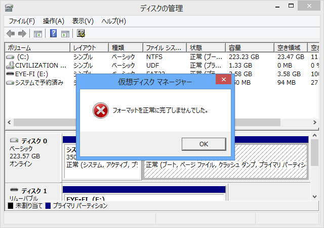
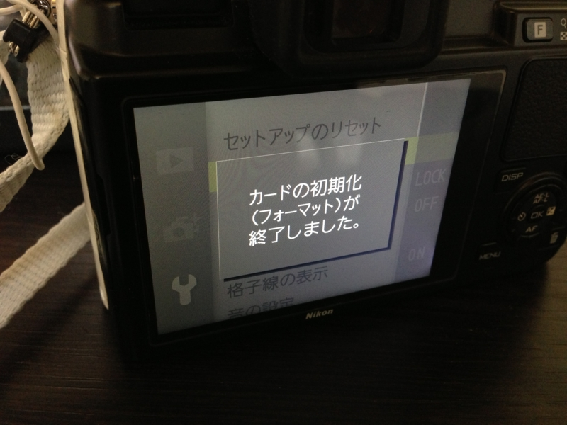
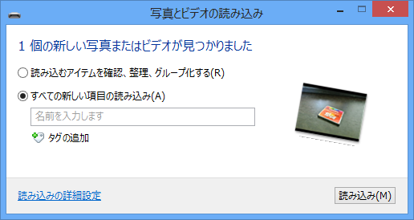

Eye-Fi ぶっ壊れた？
公開日：

プログラミング生放送勉強会 第20回＠品川に参加してきました #pronama - だるろぐ で撮った写真の一部が、パソコンに取り込めなくなった。困った。メモリカードは Eye-Fi だったのだけれど、なんだか調子悪いみたい。無線での転送もダメ。去年買ったばかりなのに（みんなもすなる Eye-Fi といふものを、わしもしてみんとて、するなり - だるろぐ）、もうダメになったのかなぁ。
でも、幸いなことに Nikon D300s では読めるようで、データの救出はできそう。実際、カメラで SD カードスロット → CF カードスロットのコピーを行い、CF カードからパソコンへファイルをインポートすることができた。
しかし、この Eye-Fi カードどうしよう。
Q. Eye-Fi カードをフォーマットしても問題ありませんか？
A. Eye-Fiカードは通常のSDカード同様、フォーマットしても問題ございません。
Eye-Fiカードの無線LAN機能、ご登録アカウント情報にも一切影響ございません。
フォーマットにより、アプリケーションのインストールプログラム等は削除されますが、
必要な場合はこちらからEye-Fi Centerをダウンロードできます。※通常のSDカード同様、フォーマットにより内部データはクリアされます。
フォーマットをされる際は、必要なお写真は必ずバックアップをとっていただきますよう、お願いいたします。
調べてみると、こいつはそのままフォーマットしてもいいみたい。とりあえず初期化してみますかね。

ありゃ？

Nikon 1 V1 ではフォーマットできた。
となると、カードリーダーがおかしいのかな？ でも、この前までは正常に読めたし、ほかの SD カードは今でも普通に読める。
追記

無事、またカードリーダーで読めるようになった！ 無線でのファイル転送にも成功。